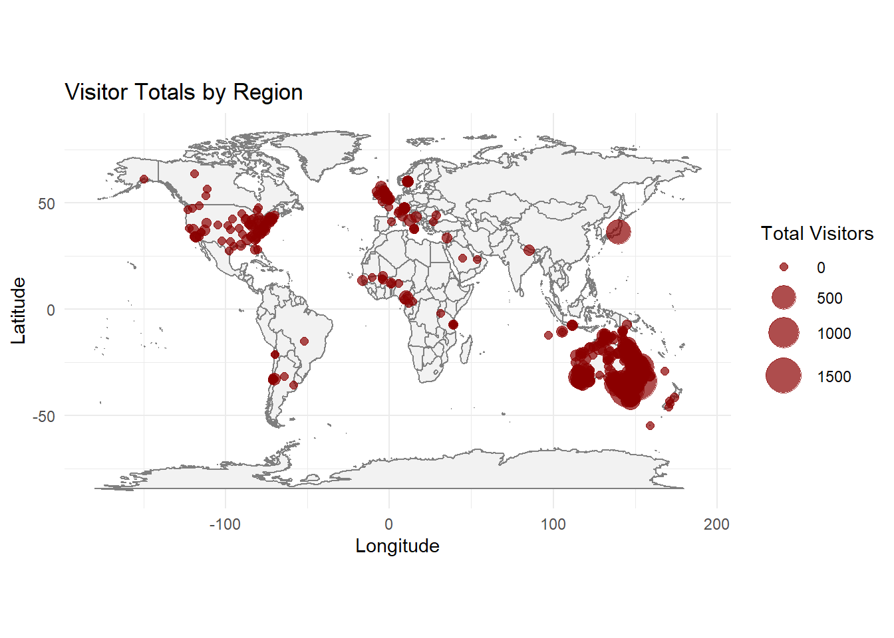
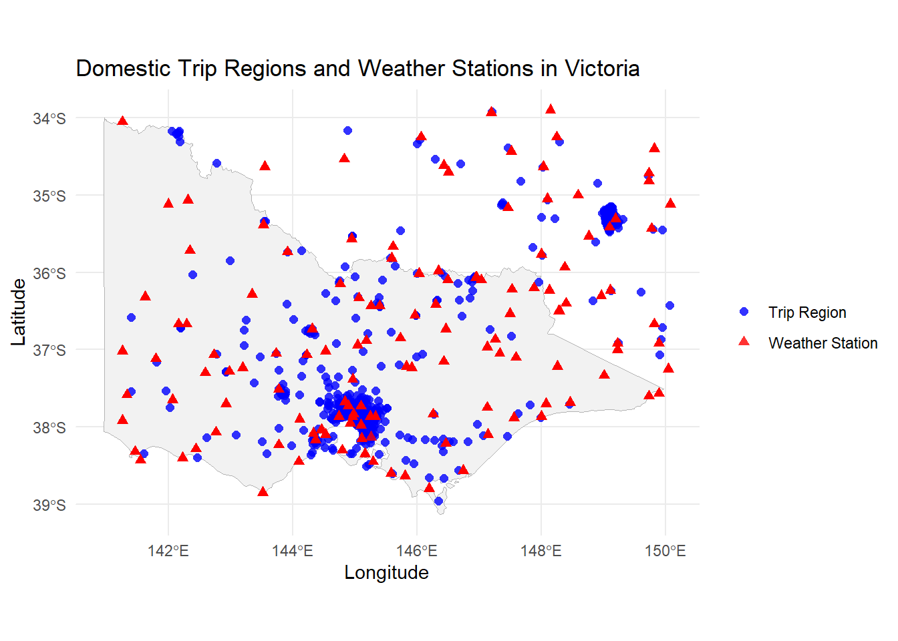

library(tidyverse)Hard Task for GSOC
Task 3 Hard
Taking the names of tourism locations described in this variable Stopover state/region/SA2 from the data-raw/domestic_trips_2023-10-08.csv write code to geocode the locations with latitude and longitude.
Read and clean the data
load required packages
read the data
raw_data <- read_csv("../../data-raw/domestic_trips_2023-10-08.csv",
skip = 9,
col_names = FALSE,
col_types = cols(X8 = col_skip()),
n_max = 248055
)Rename and clean the columns
colnames(raw_data) <- c(
"Quarter", "Region", "Holiday", "Visiting", "Business", "Other",
"Total")
head(raw_data, n = 2)# A tibble: 2 × 7
Quarter Region Holiday Visiting Business Other Total
<chr> <chr> <dbl> <dbl> <dbl> <dbl> <dbl>
1 March quarter 1998 Baulkham Hills - East 0 0 2.90 0 2.90
2 <NA> Baulkham Hills (West… 0 0 0 0 0 Now, fill down the Quarter info:
clean_data <- raw_data %>%
fill(Quarter, .direction = "down") %>%
filter(!is.na(Region)) # Remove empty rows
head(clean_data, n = 2)# A tibble: 2 × 7
Quarter Region Holiday Visiting Business Other Total
<chr> <chr> <dbl> <dbl> <dbl> <dbl> <dbl>
1 March quarter 1998 Baulkham Hills - East 0 0 2.90 0 2.90
2 March quarter 1998 Baulkham Hills (West… 0 0 0 0 0 Geocode the “Region” column
Now for the geocoding. We have a list of place names — most likely suburb/local area names in Australia. We can use tidygeocoder, which is flexible and integrates with many providers.
Install if needed and then load
if (!requireNamespace("tidygeocoder", quietly = TRUE)) {
install.packages("tidygeocoder")
}
library(tidygeocoder)Geocode the unique region names
geocoded_locations <- clean_data %>%
distinct(Region) %>%
geocode(
address = Region,
method = "osm", # other methods "arcgis" or "census"
lat = latitude,
long = longitude,
full_results = FALSE,
custom_query = list(countrycodes = "AU")
)
save(geocoded_locations, file = "../data/geocoded_Locations_V1.rds")load(file = "../data/geocoded_Locations_V1.rds")use other methods for completing NA records
geocoded_missing <- geocoded_locations |>
filter(is.na(latitude) | is.na(longitude)) |>
geocode(
address = Region,
method = "arcgis",
lat = latitude,
long = longitude,
full_results = FALSE,
custom_query = list(countrycodes = "AU")
)
geocoded_missing <- geocoded_missing |> transmute(
Region = Region,
latitude = latitude...4,
longitude = longitude...5
)
save(geocoded_missing, file = "../data/geocoded_Locations_V2.rds")load(file = "../data/geocoded_Locations_V2.rds")Merge results (fill NAs with second try)
geocoded_combined <- geocoded_locations %>%
rows_update(geocoded_missing, by = "Region") |>
filter(!is.na(latitude))clean_data_with_coords <- clean_data %>%
left_join(geocoded_combined, by = "Region") |>
filter(!is.na(latitude)) |> rename(
LAT = latitude,
LON = longitude
)
save(clean_data_with_coords, file = "../data/domestic_trips_20231008_geocoded.rda")clean_data_with_coords |> distinct(Region, .keep_all = T) |>
ggplot(aes(x = LON, y = LAT)) +
borders("world", fill = "gray95", colour = "gray50") +
geom_point(aes(size = Total), color = "darkred", alpha = 0.7) +
scale_size_continuous(range = c(2, 10)) +
coord_fixed(1.3) +
labs(
title = "Visitor Totals by Region",
x = "Longitude", y = "Latitude", size = "Total Visitors"
) +
theme_minimal()
Filter for Victoria
first we filter out domestic data just for Victoria
domestic_trips_VIC <- clean_data_with_coords %>%
filter(
LAT >= -39, LAT <= -33.9,
LON >= 140.9, LON <= 150.1
)Then we want to find near-st weather stations to each of this spots.
load Victoria Stations Coordinates
load(file = "../data/vic_stations.RDA")find the nearest weather station
library(geosphere)
nearest_station_ids <- sapply(1:nrow(domestic_trips_VIC), function(i) {
dists <- distHaversine(
cbind(vic_stations$LON, vic_stations$LAT),
c(domestic_trips_VIC$LON[i], domestic_trips_VIC$LAT[i])
)
vic_stations$STNID[which.min(dists)]
})Add nearest station ID to domestic_trips_VIC
domestic_trips_VIC$STNID <- nearest_station_idssave data GC geocoded STNID nearest station ids
save(domestic_trips_VIC, file = "../data/domestic_trips_VIC_GC_STNID.rda")library(ozmaps)
# Prepare region points
region_points <- domestic_trips_VIC %>%
distinct(Region, LAT, LON) %>%
mutate(Type = "Trip Region")
# Prepare station points
station_points <- vic_stations %>%
rename(LAT = LAT, LON = LON) %>%
mutate(Type = "Weather Station")
# Combine both for legend
combined_points <- bind_rows(region_points, station_points)
# Plot with legend
ggplot() +
geom_sf(data = ozmaps::ozmap_states %>% filter(NAME == "Victoria"), fill = "gray95", color = "gray70") +
geom_point(data = combined_points, aes(x = LON, y = LAT, color = Type, shape = Type), size = 2, alpha = 0.8) +
scale_color_manual(values = c("Trip Region" = "blue", "Weather Station" = "red")) +
scale_shape_manual(values = c("Trip Region" = 16, "Weather Station" = 17)) + # dot and triangle
labs(
title = "Domestic Trip Regions and Weather Stations in Victoria",
x = "Longitude", y = "Latitude",
color = "", shape = ""
) +
coord_sf() +
theme_minimal() +
theme(legend.position = "right")